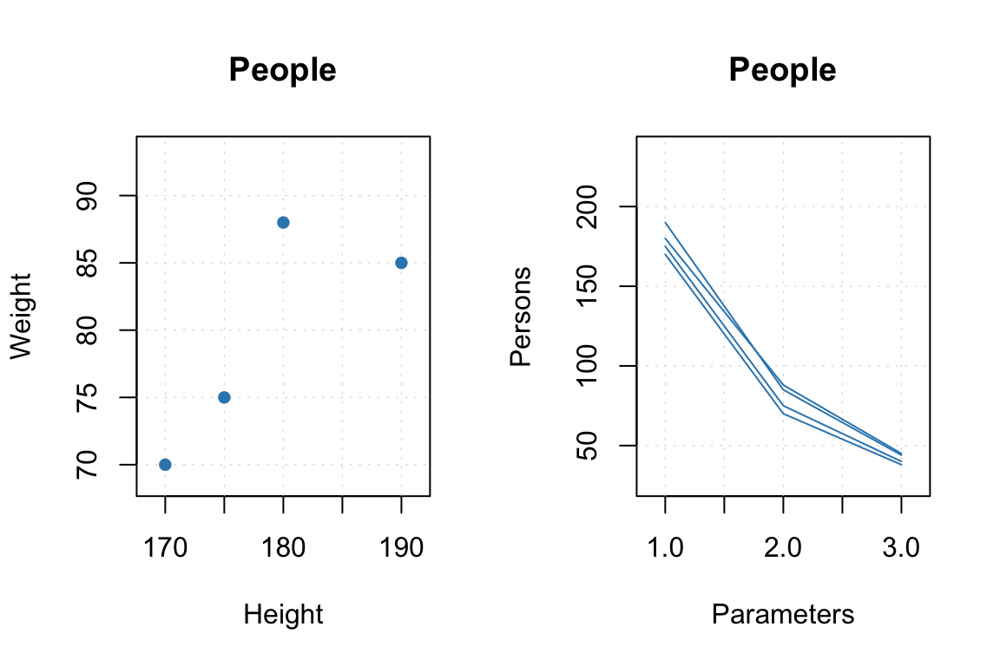

Attributes and factors
This section tells how to extend the functionality of the package by using attributes assigned to datasets and how the implemented methods deal with factors.
Package specific attributes
There are several groups of attributes, which allow to assign names and manual x-values to the datasets, exclude columns and rows from calculations without removing them physically as well as working with images. We will illustrate how to work with most of the attributes by using a simple dataset defined below. It consists of three variables Height, Weight, Shoesize and four records/objects/rows.
d = matrix(c(190, 180, 170, 175, 85, 88, 70, 75, 44, 45, 38, 40), ncol = 3)
colnames(d) = c('Height', 'Weight', 'Shoesize')
rownames(d) = c('Bob', 'Peter', 'Lisa', 'Lena')
d = as.data.frame(d)
show(d)## Height Weight Shoesize
## Bob 190 85 44
## Peter 180 88 45
## Lisa 170 70 38
## Lena 175 75 40Attributes for plots
These attributes will be explained very briefly here, you can find much more details in the next two sections. The idea is to provide some names and values to the data, which can be used later e.g. for making labels and titles on the plots. When dataset is used to create a model (e.g. PCA) all results representing objects (e.g. scores, Q-residuals, T2-residuals, etc.) will inherit the row specific attributes and all results representing objects (e.g. loadings) will inherit column specific attributes.
The attributes are following:
| Attribute | Meaning |
|---|---|
name |
name of a dataset (used for plot parameter main) |
xaxis.name |
name for all data columns (used for plot parameter xlab) |
yaxis.name |
name for all data rows (used for plot parameter ylab) |
xaxis.values |
a vector of values, which correspond to the columns (e.g. for spectroscopic data it can be wavelength or wavenumbers) |
yaxis.values |
a vector of values, which correspond to the rows (e.g. for kinetic data it can be time or temperature of reaction) |
Here is a very simple example.
attr(d, 'name') = 'People'
attr(d, 'xaxis.name') = 'Parameters'
attr(d, 'yaxis.name') = 'Persons'
par(mfrow = c(1, 2))
mdaplot(d, type = 'p')
mdaplot(d, type = 'l')
See more details in the section about plots.
Special methods for data transformations
Since data objects in R lose all user specified attributes when e.g. we transpose them or taking a subset it was decided to write several methods, which process attributes correctly. They also adjust indices of excluded rows and columns when user takes a subset or merge two data objects together. When data matrix is transposed the corresponding method will switch the x- and y- attributes. All methods with a brief description are listed in the table below (including the ones already introduces).
| Method | Description |
|---|---|
mda.show(data) |
Show data object without excluded elements |
mda.t(data) |
Transpose data object |
mda.cbind(data1, data2, ...) |
Merge several datasets by columns |
mda.rbind(data1, data2, ...) |
Merge several datasets by rows |
mda.subset(data1, subset, select) |
Take a subset of data object (subset is numeric indices, names or logical values for rows, select — the same for columns) |
attrs = mda.getattr(data) |
Return all user specific attributes from an object |
data = mda.getattr(data, attrs) |
Assign user specific attributes to an object |
Data frames with factors
All methods, implemented in the package, work with matrices, therefore, if a user provides data values as data frame, it is converted to matrix. From version 0.8.0 it is also possible to provide data frames with one or several factor columns. In this case all factors will be converted to dummy variables with values –1 and +1. You can also do it manually, by using function prep.df2mat() as this is shown in an example below.
Let us first crate a simple data with a factor column.
h = c(180, 175, 165, 190, 188)
c = c('Gray', 'Green', 'Gray', 'Green', 'Blue')
d = data.frame(Height = h, Eye.color = c)
show(d)## Height Eye.color
## 1 180 Gray
## 2 175 Green
## 3 165 Gray
## 4 190 Green
## 5 188 BlueAnd this is the result of converting it to a matrix.
d.mat = mda.df2mat(d)
show(d.mat)## Height Blue Gray
## [1,] 180 0 1
## [2,] 175 0 0
## [3,] 165 0 1
## [4,] 190 0 0
## [5,] 188 1 0The number of dummy variables by default is the number of levels minus one. You can change this by using argument full = TRUE is it is shown in the example below.
d.mat = mda.df2mat(d, full = TRUE)
show(d.mat)## Height Blue Gray Green
## [1,] 180 0 1 0
## [2,] 175 0 0 1
## [3,] 165 0 1 0
## [4,] 190 0 0 1
## [5,] 188 1 0 0It is important to have level labels in all factor columns of the same data frame unique, as they are used for names of the dummy variables (e.g. you should not have two factors with the same level name). If a factor is hidden it will be just converted to numeric values and remain excluded from modelling.